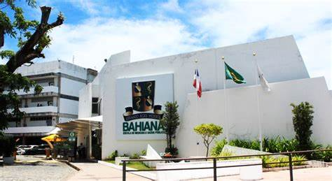

Sobre nós
A Escola Bahiana de Medicina e Saúde Pública (ou, simplesmente, Bahiana) é uma instituição de ensino superior de Salvador, Bahia, Brasil, fundada no ano de 1952. Possui duas unidades acadêmicas, localizadas nos bairros de Brotas e Cabula. Oferecemos cursos de graduação em Medicina, Biomedicina, Enfermagem, Fisioterapia, Odontologia, Psicologia e Educação Física. Em sua grade, também possuímos cursos de extensão e pós-graduação (lato e stricto sensu). Nossos vestibulares costumam ser bastante concorridos - especialmente para o curso de Medicina, visto que até há pouquíssimo tempo éramos a única faculdade particular da capital baiana a oferecer esse curso. A Bahiana é mantida pela Fundação Bahiana para Desenvolvimento das Ciências (FBDC), instituição sem fins lucrativo.
Com olhos atentos à realidade do mercado de formação profissional em saúde na Bahia dos anos 50, um grupo de visionários médicos, acadêmicos, religiosos e gestores públicos idealizaram uma nova instituição. Nessa época, o estado contava apenas com o curso da Faculdade de Medicina da Bahia, que oferecia 130 vagas por ano – disputadas por baianos e jovens vindos de diversos estados. Diante desse panorama, os médicos Antônio Simões da Silva Freitas, Orlando de Castro Lima, Jorge Valente, Aristides Novis Filho, Adelaido Ribeiro, Antônio Souza Lima Machado, Colombo Moreira Spínola, Urcício Santiago e André Negreiros Falcão, os religiosos Francisco Pinheiro Lima Junior e Manoel Aquino Barbosa e o professor secundarista René Alfredo Guimarães lideraram o início de uma grande jornada. A transferência das atividades práticas do curso de Medicina da Universidade da Bahia para o Hospital das Clínicas, em 1948, deixou livre o espaço para atividades acadêmicas do Hospital Santa Izabel, mantido pela Santa Casa de Misericórdia. Percebendo a oportunidade, o grupo de idealizadores entrou em negociação com a direção da Santa Casa, com o objetivo de implantar um novo curso de Medicina em Salvador. A proposta foi aceita com entusiasmo pelo então provedor Otávio Ariani Machado. Em 31 de maio de 1952, os 13 fundadores assinaram a ata que formalizava a criação da Fundação Bahiana para Desenvolvimento da Medicina (atual Fundação Bahiana para Desenvolvimento das Ciências), com a missão de servir como mantenedora da Escola Bahiana de Medicina e Saúde Pública. Após a formalização de todos os trâmites, no dia 13 de novembro de 1952, foi eleita a primeira comissão executiva da Fundação, integrada por Antônio Simões da Silva Freitas (presidente), Jorge Valente (secretário geral), Adelaido Ribeiro (secretário de Finanças), Urcício Santago (secretário de Cultura) e Aristides Novis Filho (secretário de Administração). No dia 6 de dezembro de 1952, o médico e professor Jorge Valente foi eleito o primeiro diretor da Escola Bahiana de Medicina e Saúde Pública e o professor René Alfredo Guimarães, o primeiro secretário. A data também marcou a aprovação do regimento interno da Fundação. A primeira equipe de professores foi selecionada em janeiro de 1953. Em 14 de abril, foi realizado o primeiro vestibular da história da Bahiana, para o qual se inscreveram 94 candidatos, que concorriam a 40 vagas. Ainda em abril, o professor Aristides Novis Filho ministraria a aula inaugural do curso de Medicina. Em 1958, formava-se a primeira turma da Escola Bahiana de Medicina e Saúde Pública.